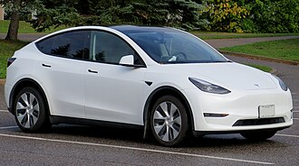
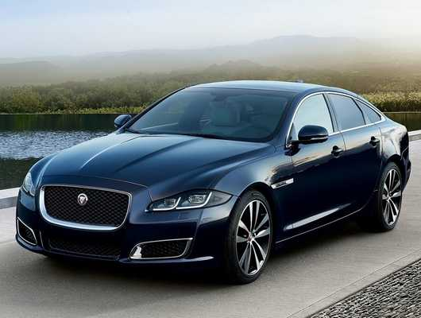
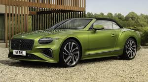
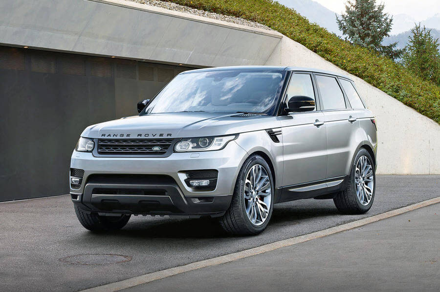
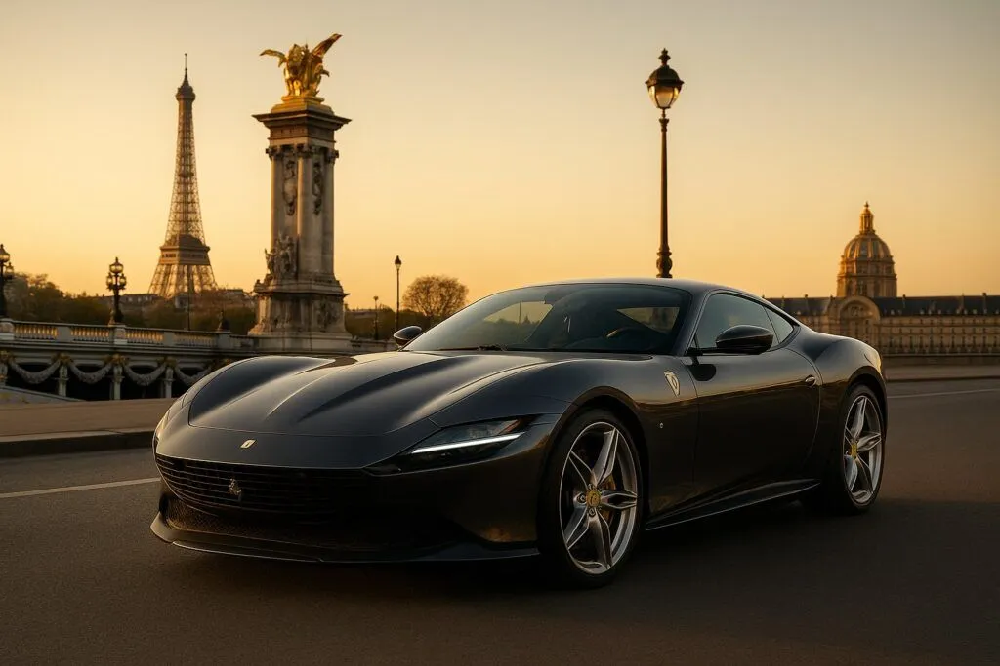
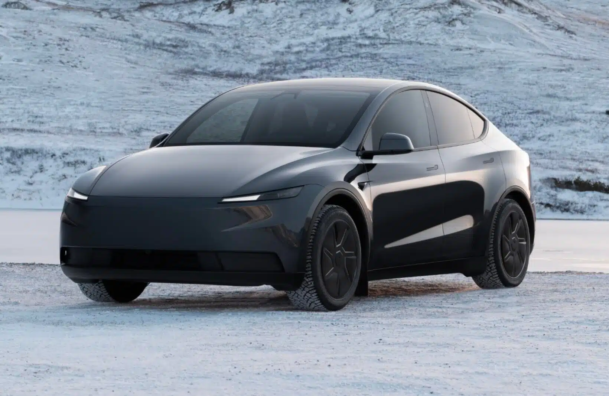

| Année | ||
|---|---|---|
| Kilométrage | ||
| Carburant | ||
| Boîte | ||
| Puissance |
 |
 |
 |
 |
|---|
 |
|---|
Prix : à partir de 39 990 € – jusqu’à 61 990 € selon version
La Tesla Model Y est un SUV électrique premium conçu pour l’autonomie, le confort et la performance. Elle dispose d’un intérieur moderne, d’un écran tactile central et de nombreuses technologies de série.
Plus d'informations sur Caradisiac
Source : Données constructeur
Source : fiche technique Tesla Model Y